Last Week’s Work Review#
We decided that we should reproduce Goyal’s work first, with a little bit modification.
You need password to access to the content, go to Slack *#phdsukai to find more.
Part of this article is encrypted with password:
[TOC]
- Difference btw reward shaping vs HER
- Goal vs Toxic goal (try to define it)
- Instruction goal vs predicate goal
- How to formulate Toxic goal in HER
- Discuss how Toxic HER would work over the cliff problem
TODO List#
- Annotation works
- check Goyal’s codes
Details of some possible architectures#
-
Goyal’s plus
- change the action frequency data to something with observations data so that we can extract info from observations.
- https://github.com/prasoongoyal/rl-learn
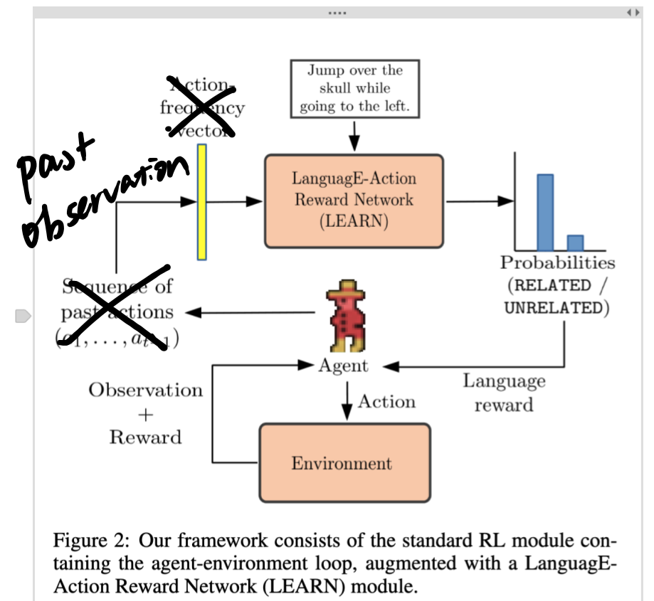
-
Segmentation of level walkthrough and demonstration snippets retrieval and reward shaping
- do this by decide the subgoal, and give rewards based on the progress in the demonstration.
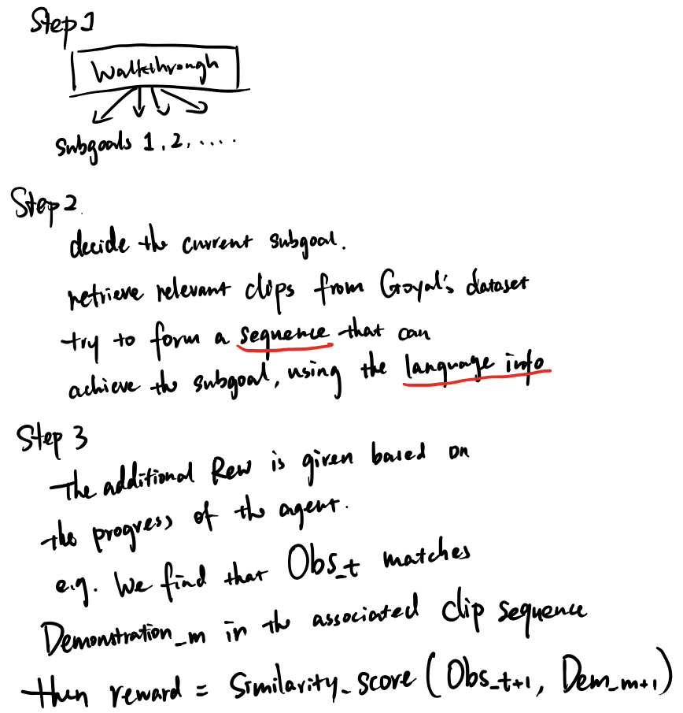
-
Goyal’s plus plus (unstable)
- label walkthrough content as “good” and “constraints”
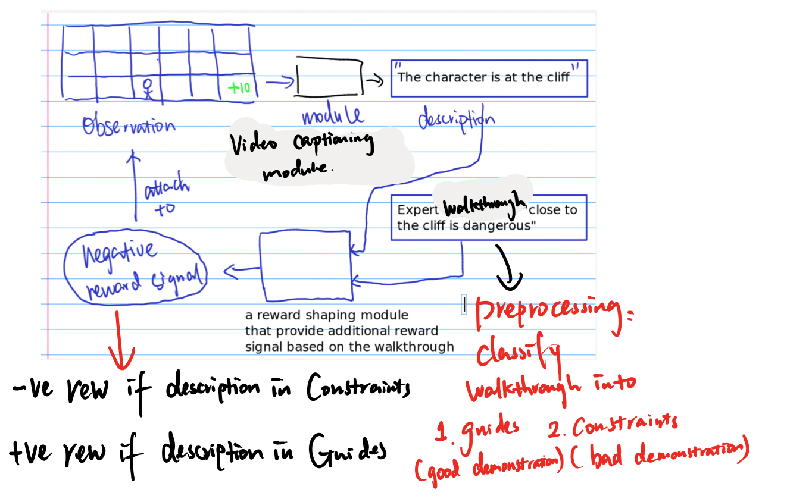
-
HER (future)
Check Goyal’s open source code#
Goyal’s reward shaping model
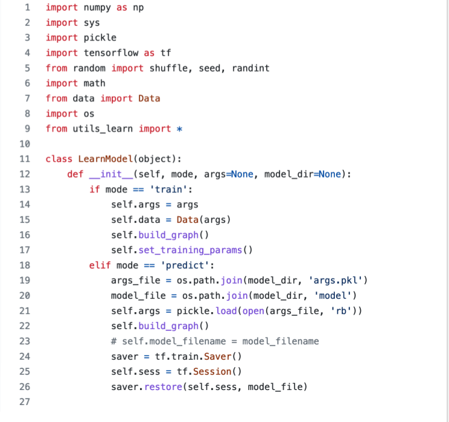
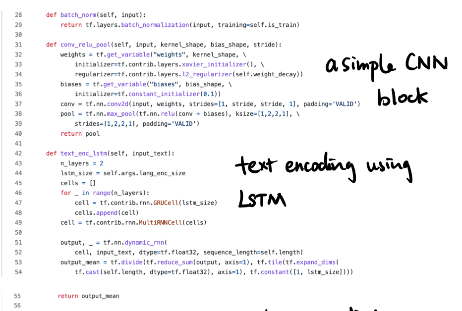
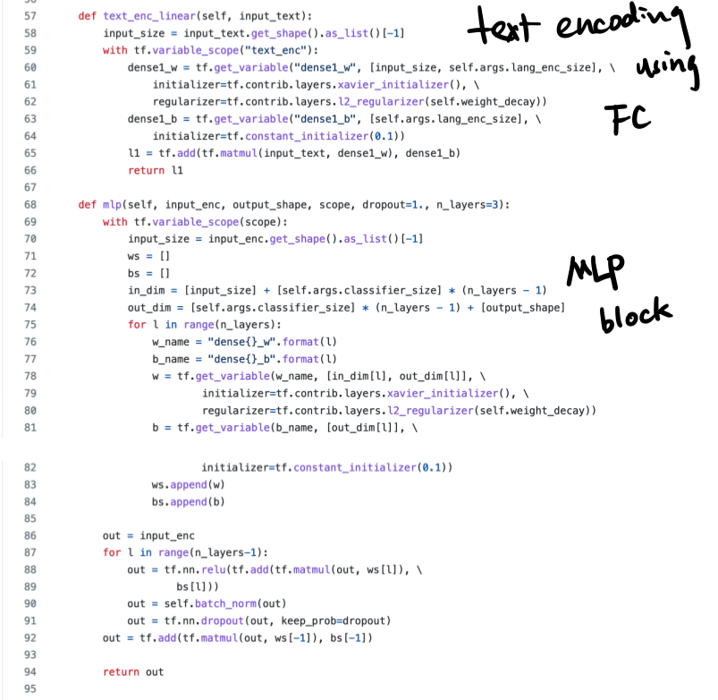
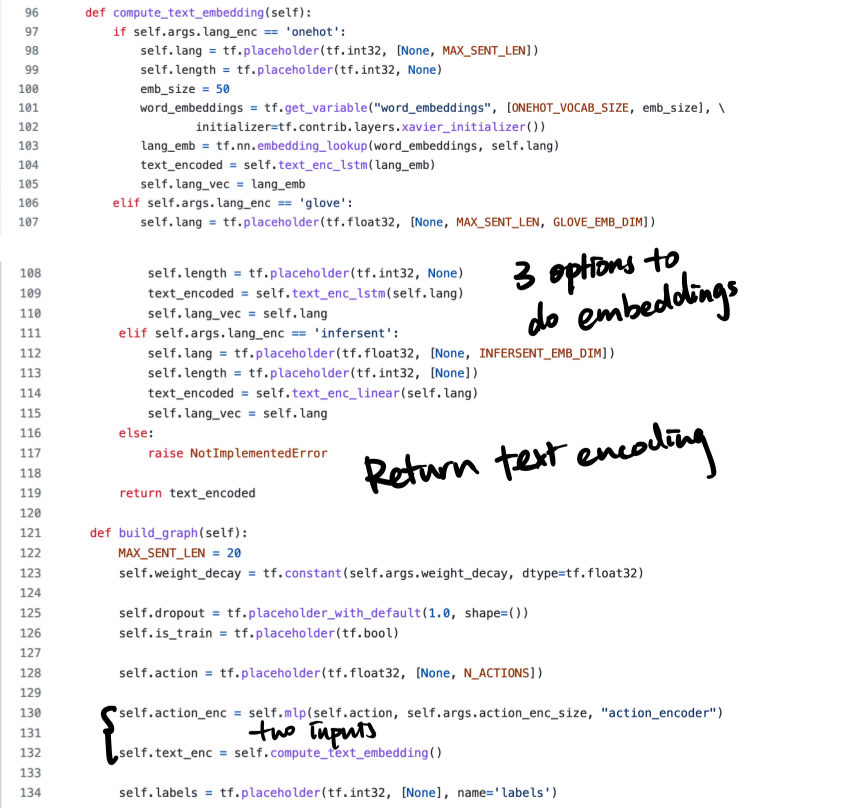
here, we will add one more input, which is the 2D visual observation sequence
- 2D visual observation + 1 temporal dim = 3D data.
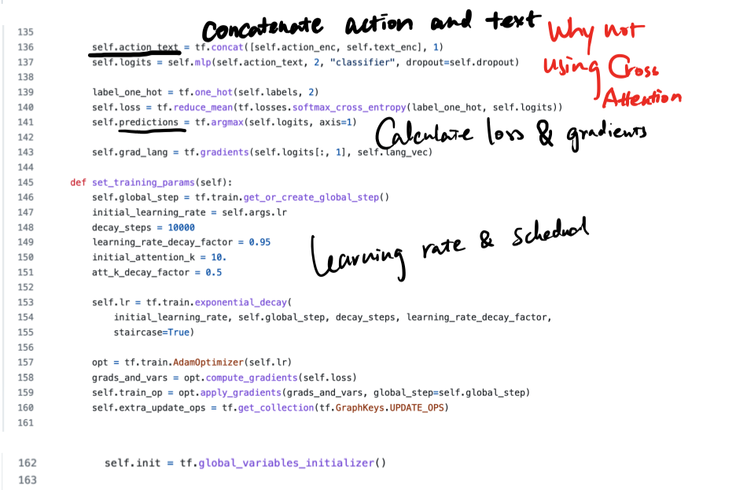
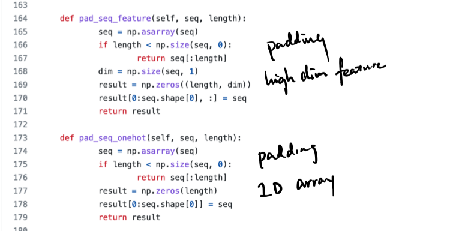
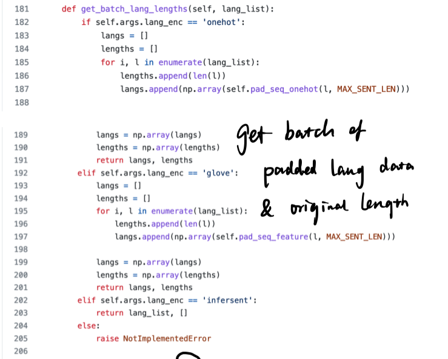
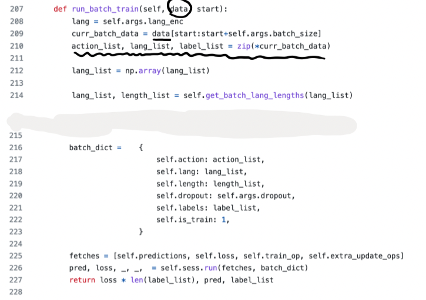
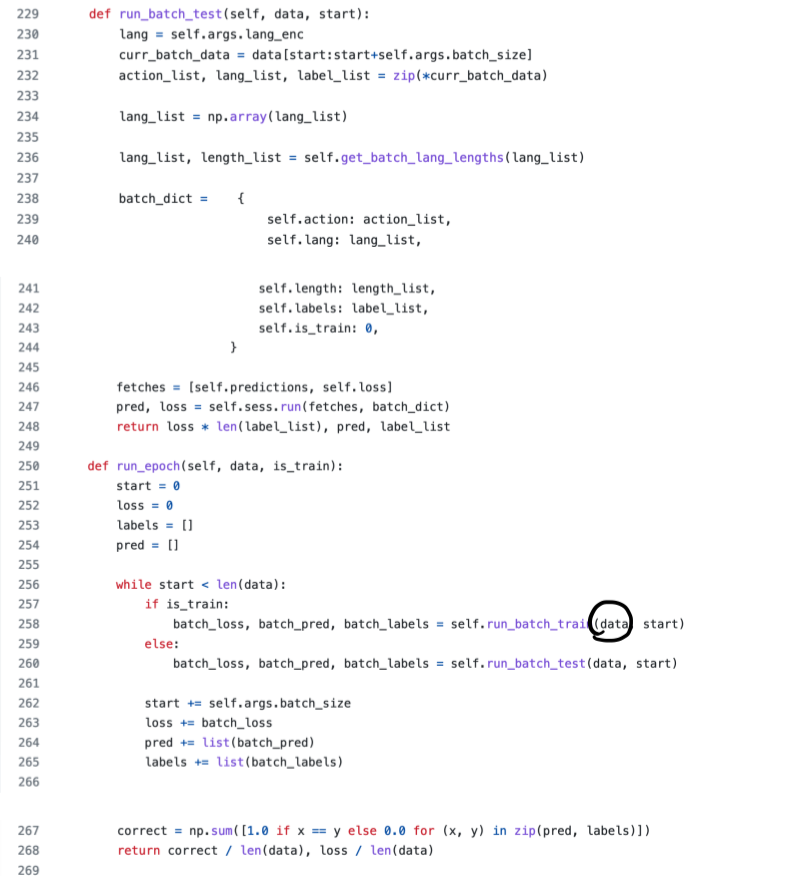
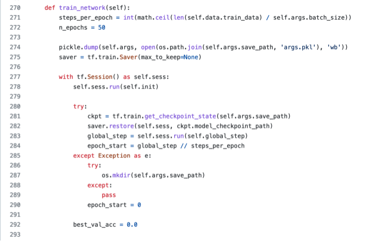
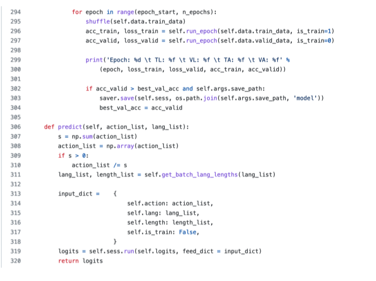
Goyal’s RL algoritm is PPO
- we can use IMPALA RL algorithm instead.
Vision module#
Two modules
- ConvNext
- Go-Explore object recognition (Montezuma’s Revenge-specific)
- https://github.com/mcmachado/b-pro B-PRO
Go-Explore object recognition#
Go-Explore may contain Montezuma’s Revenge specific object recognition module, as mentioned in the paper.
Go-Explore can also harness easy-to-provide domain knowledge to substantially boost performance. It can do so because the way Go-Explore explores a state space depends on the cell representation, meaning exploration efficiency can be improved by constructing a cell representation that only contains features relevant for exploration
Domain knowledge representations consists of the current room the agent is currently located in, as well as the discretized x, y position of the agent (Extended Data Table 1a). In Montezuma’s Revenge, the representation also includes the keys currently held by the agent (including which room they were found in) as well as the current level.
This work it was extracted from pixels through small hand-written classifiers, showing that domain knowledge representations need not require access to the inner state of a simulator.
- paper: https://arxiv.org/pdf/2004.12919.pdf
- github: https://github.com/uber-research/go-explore
- the object recognition module is in
go-explore/robustified/goexplore_py/montezuma_env.pyfile.- quite unreadable though
- e.g., the function for recognising the face of the character is
def get_face_pixels(self, unprocessed_state):
return set(zip(*np.where(unprocessed_state[50:, :, 0] == 228)))
looks like the pixel value for the face of the character is 228
ConvNext#
SOTA CNN model
- paper: https://arxiv.org/abs/2201.03545
- we may directly use ConvNext model in pytorch: https://pytorch.org/vision/main/models/convnext.html
- Github: https://github.com/facebookresearch/ConvNeXt
- Code Demos
- Chinese Version ConvNeXt Explanation: https://www.bilibili.com/video/BV14S4y1L791
Notes about temporal alignment#
- we may take lessons from DETR paper and “Temporal query networks for fine-grained video understanding” paper
- the alignment can be done under attention mechanism in transformer.
https://www.bilibili.com/video/BV1GB4y1X72R (Chiese version paper reading for DETR)
Learnable query embedding for transformer decoder#
current works often use a learnable query embedding for transformer decoder to constrain the shape of the transformer output.